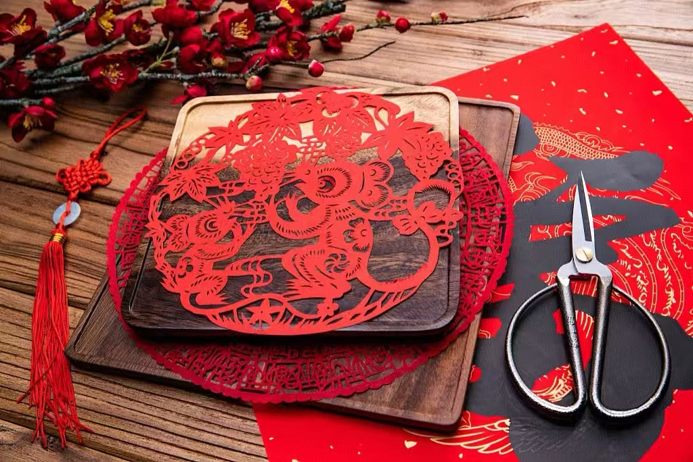
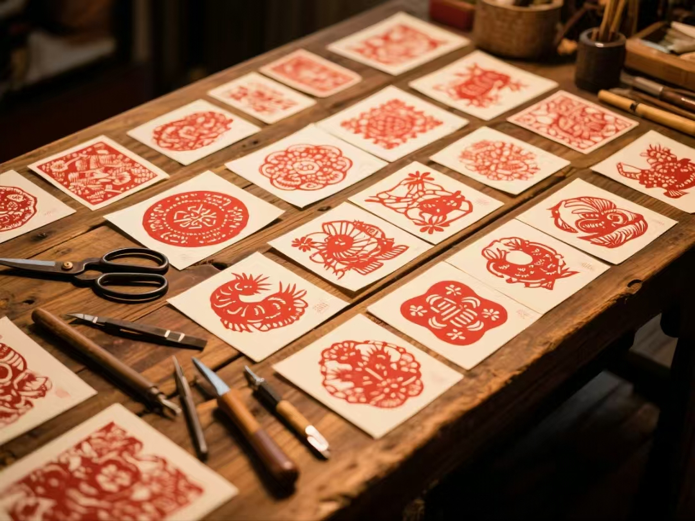
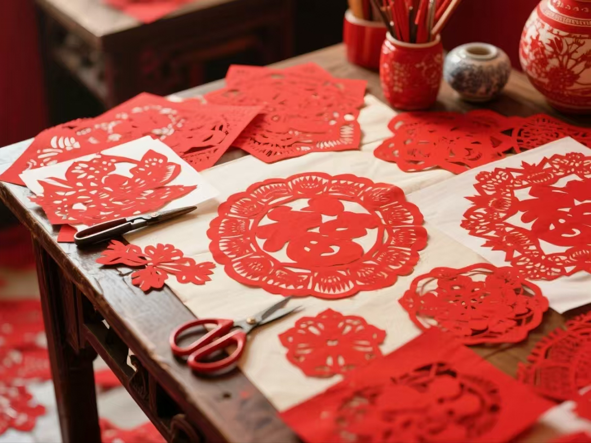
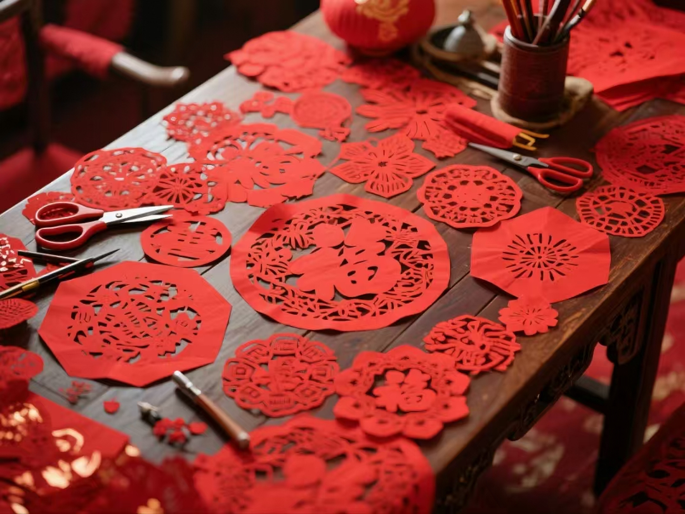

智绣华裳
首页
纹样图库
生肖系列
泥泥狗
非遗服饰
关于我们
传统纹样图片数据库
500+
纹样总数
24
纹样类别
12
朝代分类
48
非遗项目
搜索
全部
图腾
动物纹
几何纹
植物
戏曲
山水
人物
世俗
神话
精选纹样展示

传统剪纸
用于宣传传统文化，传承民间艺术

传统剪纸
用于宣传传统文化，传承民间艺术

传统剪纸
用于宣传传统文化，传承民间艺术

传统剪纸
用于宣传传统文化，传承民间艺术
纹样图库
×
下载图片
关闭